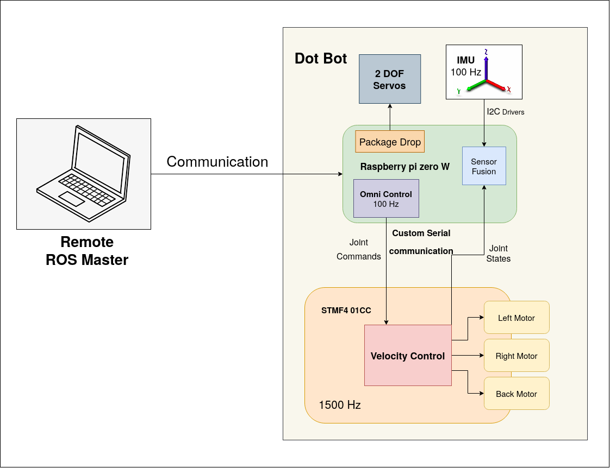

This is fully ROS integrated robot, which can be used in various purposes our main use case was to test out multiagent algorithms. We used it to take part in the national level competition, FlipKart Grid 3.0 Robotics challenge 2021.
I have worked on building the platform and the integrating ROS with the following robot. The localization was done using a Apriltag_ros and a array of cameras. Also worked on implementing autonomously navigating in the environment and computing the optimal path while considering other robots in the arena.
The complete package including the controller and the planner can be found at Dot-Bot.
The robots control architecture is a state-of-the-art implementation using a microprocessor and a microcontroller along with sensor fusion for position estimation with external cameras for deteciton of apriltags that denote the robot.
The exact control architecture is briefly given in the below image which later is elaborated in 3 bulletin points

The whole implementation of the control architecture can be found at Swarm-bot-hardware.
We have setup the whole simulation for these robots as we have modelled the real robot. We have also added the 2DOF droppers that can be seen on top of each robot.
We have setup Rviz to visualize the robots both in simulation and hardware.
An demo of the robot in gazebo
The main task was to drop packages using the most optimal path, We had used CBS with minor changes to best suite our problem statement. We also used Tracking PID for tracing these trajectories and making it more general and robust to be used with other algorithms and systems.

Example of the arena in which it drops the package
The robot is now a developmental platform for other multiagent research at Indian Institute of Technology, Varanasi The robot is now about to have minor upgrades for it be used in a more real world use case by addition of lidars and better on board computation.
A preliminary result of the path planning algorithm with package dropping can be seen below.